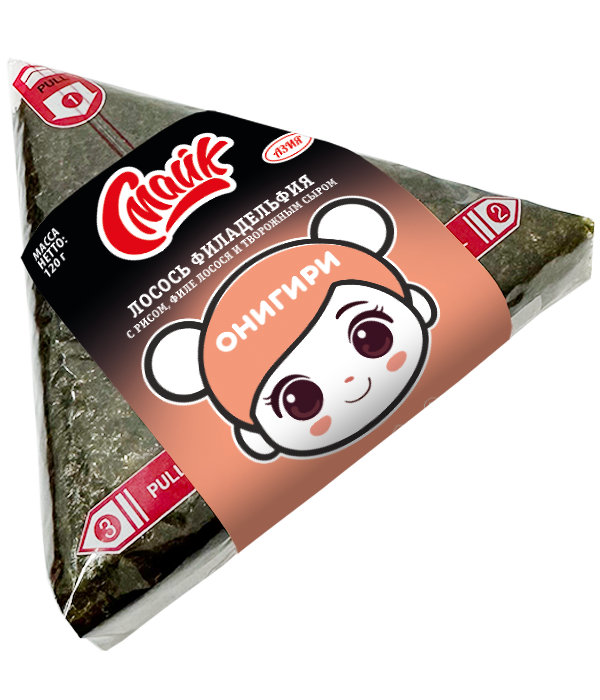

Онигири лосось филадельфия

Состав:
рис, филе лосося, творожный сыр, нори.
Масса нетто:
120 г.
Пищевая и энергетическая ценность в 100 г продукта (средние значения):
Белки
– 4,8 г.
Жиры
– 7,6 г.
Углеводы
– 30,7 г.
Калорийность
– 210 ккал / 883 кДж.
Закрыть окно